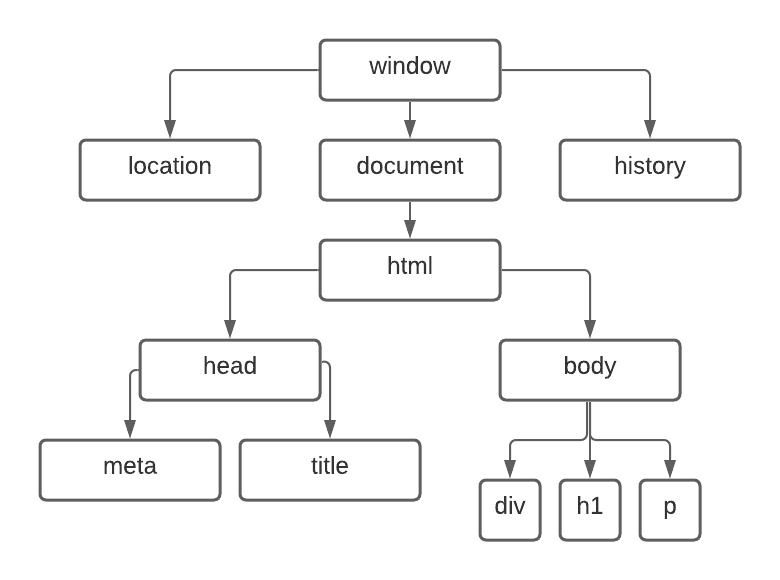

DOM > Document Object Model
E uma representação hierárquica em forma de árvore de todos os elementos HTML de uma página da web. Basicamente, quando você acessa um site, seu navegador cria uma árvore DOM para organizar todos os elementos da página, como imagens, texto, links, botões e outros elementos HTML. Essa árvore permite que o navegador interprete e renderize a página corretamente. Cada nó na árvore representa um elemento HTML, e cada nó pode ter filhos (outros elementos HTML aninhados dentro dele) e irmãos (outros elementos HTML no mesmo nível hierárquico). A árvore DOM pode ser acessada e manipulada usando JavaScript, permitindo que os desenvolvedores alterem dinamicamente a aparência e o comportamento da página.
Aqui vai o resultado
Aprendendo a usar DOM em JavaScript.